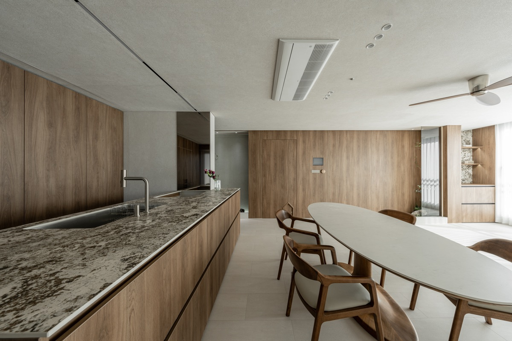

부산 아파트 리모델링
예쁜 완성보다,
먼저 확인할 것이 있습니다
견적과 사진만으로는 알기 어려운 구조·설비·생활 동선.
공간보감은 그 집의 조건을 먼저 읽고, 가능한 선택을 함께 정리합니다.
처음 공사가 막막한 순간부터, 조건을 판단하고 생활이 달라지는 순간까지.
먼저 확인한 조건들, 시공 사례로 보기
이 공간처럼 상담받기


상담 전에 확인할 세 가지 기준
견적의 포함 범위와 집의 상태, 공사 순서를 먼저 살펴보세요.

이야기 01
처음 하는 공사,
무엇부터 확인해야 할지 막막할 때
구축 아파트는 견적을 비교하기 전에 구조와 설비, 생활 동선을 함께 살펴야 합니다. 공사 뒤에야 드러나는 변수를 줄이려면, 상담에서 확인할 기준부터 정리하는 일이 먼저입니다.
기준이 보이면, 막연한 요청도 현장 조건 안에서 다시 판단할 수 있습니다.
해운대 구축 아파트 준비 기준 원문
이야기 02
“어렵다”는 답 대신,
가능한 조건을 다시 살폈습니다
원하는 주방과 공조 설비가 있더라도 답을 먼저 정하지 않습니다. 설비 동선과 천장 마감, 철거 뒤 확인되는 조건을 다시 살펴 가능한 범위를 설계에 반영합니다.
조건을 이해한 뒤의 설계는, 완성 사진에서도 생활의 차이로 이어집니다.
사직 32평 공조·주방 설계 과정 원문
이야기 03
넓은 집보다,
그 집에서 사는 방식을 먼저 보았습니다
시야를 막는 구조는 감추기보다 수납과 마감의 기준으로 풀고, 거실·주방·현관의 흐름을 생활 동선에 맞춰 정리했습니다. 완성 전에는 3D 모델링으로 배치와 분위기를 확인합니다.
우리 집의 조건도 같은 기준으로 확인할 수 있습니다.
사직 42평 가족 동선 완성 사례 원문